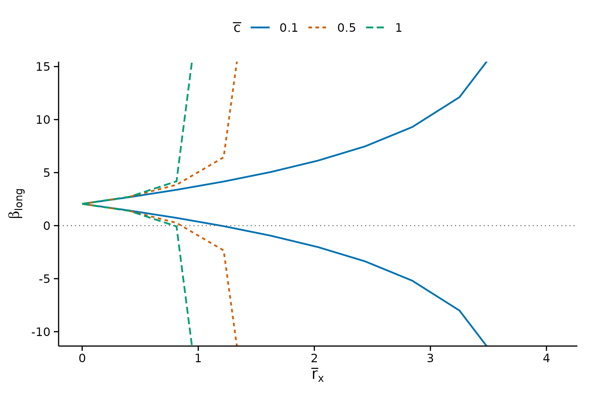
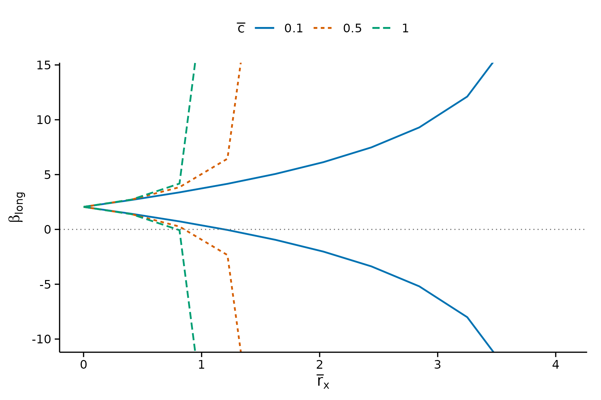
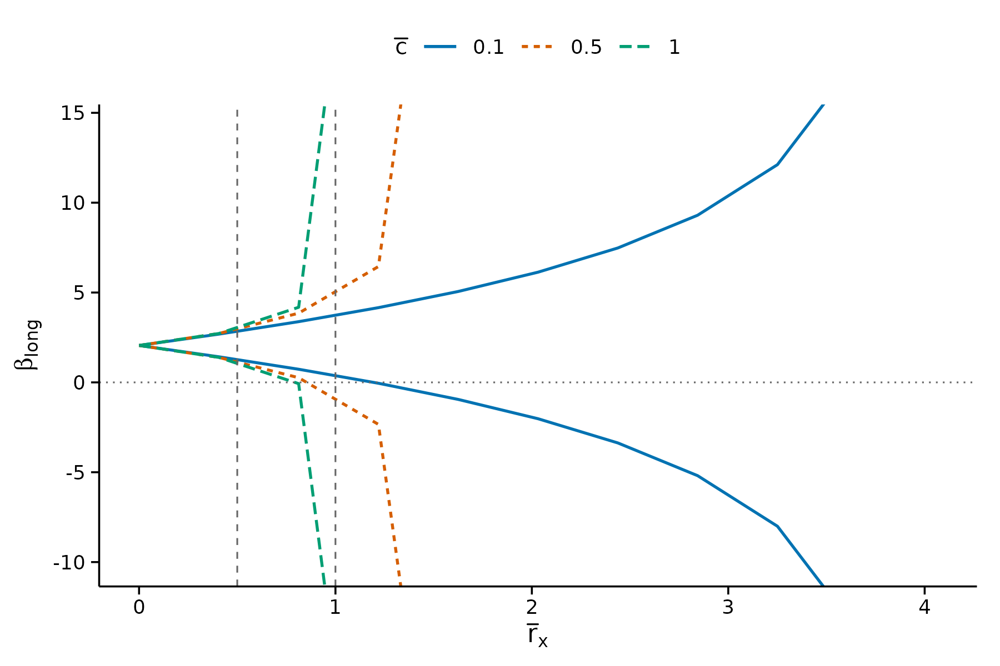
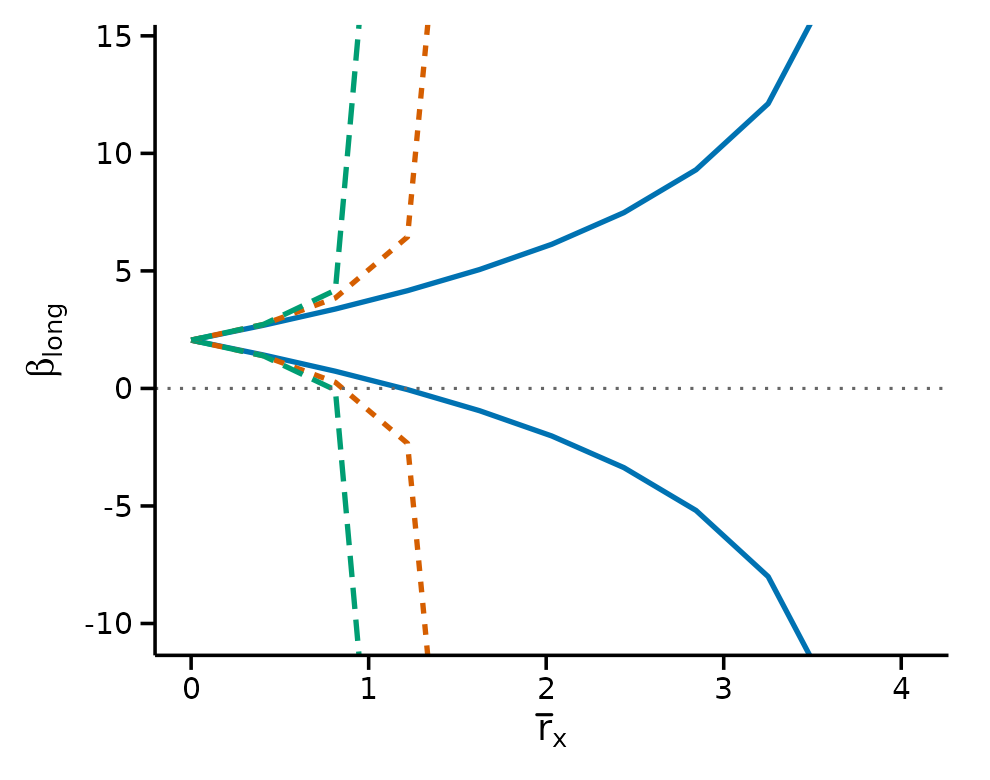
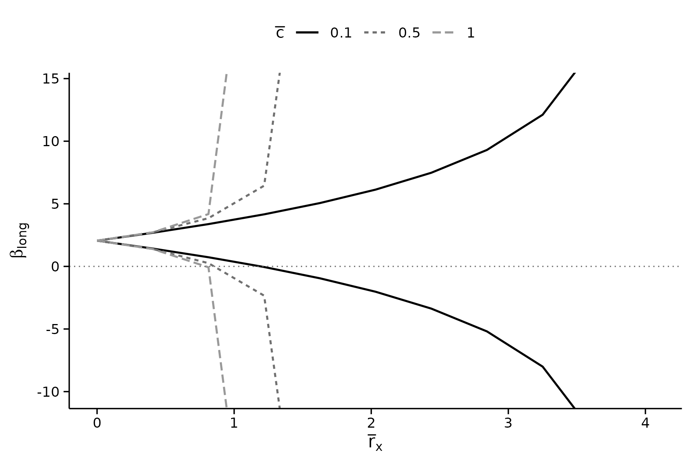
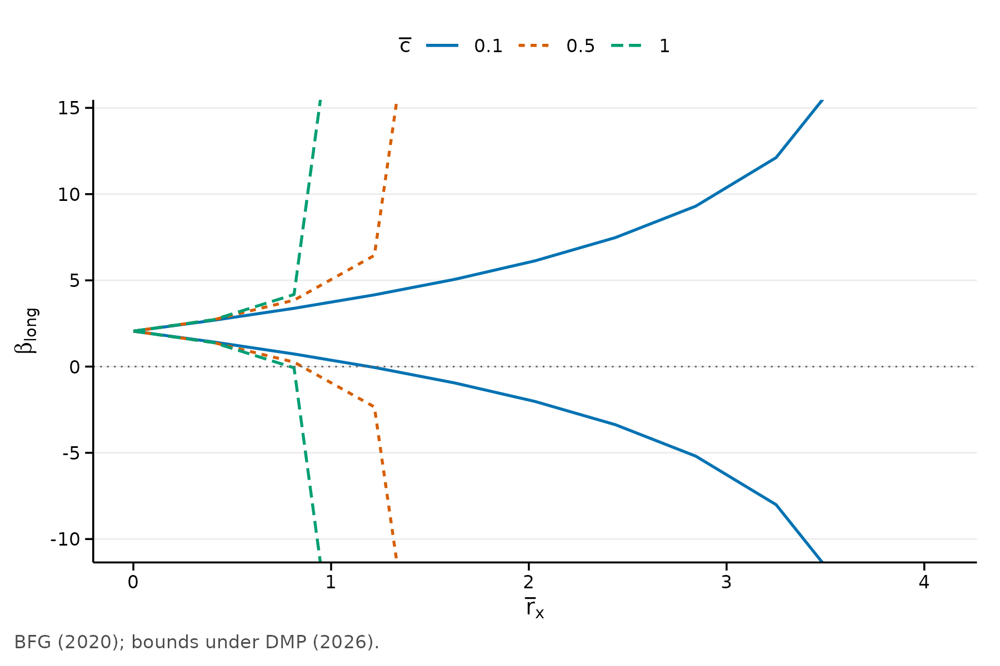

Getting a sensitivity analysis into a paper means two things: a figure that survives a journal’s production process, and a table in whatever markup the manuscript is written in. This vignette covers both.
data(bfg2020)
bfg2020$statea <- factor(bfg2020$statea)
w1 <- c("log_area_2010", "lat", "lon", "temp_mean", "rain_mean",
"elev_mean", "d_coa", "d_riv", "d_lak", "ave_gyi")
form <- avgrep2000to2016 ~ tye_tfe890_500kNI_100_l6 +
log_area_2010 + lat + lon + temp_mean + rain_mean + elev_mean +
d_coa + d_riv + d_lak + ave_gyi + statea
res <- regsen_bounds(form, bfg2020, compare = w1,
cbar = c(0.1, 0.5, 1))Figures
plot() returns an ordinary ggplot, so
nothing here is a dead end: anything the arguments do not cover, you add
yourself.
plot(res)
The defaults follow the economics journals: an L of axis lines rather than a box, no grid, ticks outside the panel, and no title, because the caption carries it.
Reading an unbounded identified set
Where the identified set is unbounded, the bounds leave the panel rather than tracing along its edge. That distinction matters: a line running flat along the axis reads as “the bound levels off here”, which is the opposite of what an infinite bound means.

The green and orange curves exit the top and bottom of the panel. They do not plateau.
Reference lines
xline is the equivalent of Stata’s xline(),
for marking a threshold under discussion in the text.

Sizing for a journal
base_size scales the type. For a two-column figure,
render at about 3.3 inches wide and pass base_size = 9,
which puts the type near 8pt on the page.
plot(res, base_size = 9, show_legend = FALSE)
Matching your manuscript’s font
Fonts are left to you, because what is installed varies by machine and a missing family would make the figure unreproducible. To match a LaTeX body type:
plot(res) + theme_regsen(base_family = "Times New Roman")Colour, greyscale and accessibility
The palette is Okabe-Ito, which stays distinguishable under the common forms of colour vision deficiency. Series are also encoded by line type, so the figure still reads when a journal prints it in greyscale – colour alone would not survive that.
plot(res) + scale_colour_grey(start = 0, end = 0.6)
#> Scale for colour is already present.
#> Adding another scale for colour, which will replace the existing scale.
Overriding anything
plot(res, subtitle = NA) +
theme_regsen(grid = "y", base_size = 10) +
labs(caption = "BFG (2020); bounds under DMP (2026).")
Tables
The tidy route
as.data.frame() gives the results as a plain data frame.
This is the recommended entry point: it hands the numbers to whichever
table package you already use, rather than tying the package to one of
them.
head(as.data.frame(res, digits = 3))
#> rxbar rybar cbar bmin bmax
#> 1 0.000 Inf 0.1 2.0500 2.05
#> 2 0.408 Inf 0.1 1.4200 2.69
#> 3 0.816 Inf 0.1 0.7240 3.39
#> 4 1.220 Inf 0.1 -0.0602 4.17
#> 5 1.630 Inf 0.1 -0.9660 5.08
#> 6 2.040 Inf 0.1 -2.0500 6.16From here kableExtra, gt,
modelsummary, huxtable, tinytable
and xtable all work as usual.
The convenience route
regsen_table() covers the common case in one call. The
format argument follows the document you are knitting to,
so the same chunk works whether the target is PDF, HTML or Markdown.
regsen_table(res, format = "markdown", digits = 3, max_rows = 6)| rxbar | rybar | cbar | Lower | Upper |
|---|---|---|---|---|
| 0 | +Inf | 0.100 | 2.05 | 2.05 |
| 2.45 | +Inf | 0.100 | -3.41 | 7.52 |
| 0.816 | +Inf | 0.500 | 0.245 | 3.86 |
| 3.26 | +Inf | 0.500 | -Inf | +Inf |
| 1.63 | +Inf | 1.00 | -Inf | +Inf |
| 4.08 | +Inf | 1.00 | -Inf | +Inf |
LaTeX for a journal
The LaTeX flavour follows the economics convention:
booktabs rules and notes inside a
threeparttable, so the note block sets to the width of the
table rather than the width of the page.
cat(regsen_table(res, format = "latex", digits = 3, max_rows = 4,
caption = "Identified sets for the long-regression coefficient",
label = "idset", notes = TRUE, escape = FALSE),
sep = "\n")notes = TRUE writes the note a referee looks for – which
analysis, which hypothesis, how many observations. Supply a character
vector instead to write your own.
Using it in a manuscript needs one line in the preamble:
Set threeparttable = FALSE if you would rather not, and
the notes are appended as plain \footnotesize lines.
Infinite bounds
An unbounded identified set is a result, not missing data, so it is
rendered rather than blanked: $+\infty$ in LaTeX, the
infinity character in HTML, +Inf in Markdown.
regsen_table(res, format = "markdown", digits = 3, max_rows = 8)| rxbar | rybar | cbar | Lower | Upper |
|---|---|---|---|---|
| 0 | +Inf | 0.100 | 2.05 | 2.05 |
| 2.04 | +Inf | 0.100 | -2.05 | 6.16 |
| 3.67 | +Inf | 0.100 | -14.2 | 18.3 |
| 1.22 | +Inf | 0.500 | -2.40 | 6.51 |
| 2.86 | +Inf | 0.500 | -Inf | +Inf |
| 0.408 | +Inf | 1.00 | 1.39 | 2.72 |
| 2.04 | +Inf | 1.00 | -Inf | +Inf |
| 4.08 | +Inf | 1.00 | -Inf | +Inf |
Feeding modelsummary
regsen_tidy() and regsen_glance() speak
broom’s vocabulary, so results flow into modelsummary and
anything else built on it. When is installed these are also reachable as
tidy() and glance().
head(regsen_tidy(res), 4)
#> term estimate conf.low conf.high rxbar rybar cbar
#> 1 tye_tfe890_500kNI_100_l6 2.054759 2.05475946 2.054759 0.0000000 Inf 0.1
#> 2 tye_tfe890_500kNI_100_l6 2.054759 1.42206743 2.687451 0.4080674 Inf 0.1
#> 3 tye_tfe890_500kNI_100_l6 2.054759 0.72444299 3.385076 0.8161347 Inf 0.1
#> 4 tye_tfe890_500kNI_100_l6 2.054759 -0.06022714 4.169746 1.2242021 Inf 0.1
regsen_glance(res)
#> analysis subcommand outcome treatment nobs
#> 1 DMP (2026) bounds avgrep2000to2016 tye_tfe890_500kNI_100_l6 2036
#> beta_medium breakdown hypothesis n_gridpoints
#> 1 2.054759 NA Beta > 0 33estimate is the medium-regression coefficient, never a
function of the bounds. Under DMP with rybar = Inf the
identified set is symmetric about that coefficient, so a midpoint would
agree here and then diverge for Oster or finite rybar – and
it is undefined wherever the set is unbounded.
#> R version 4.6.1 (2026-06-24)
#> Platform: x86_64-pc-linux-gnu
#> Running under: Ubuntu 24.04.4 LTS
#>
#> Matrix products: default
#> BLAS: /usr/lib/x86_64-linux-gnu/openblas-pthread/libblas.so.3
#> LAPACK: /usr/lib/x86_64-linux-gnu/openblas-pthread/libopenblasp-r0.3.26.so; LAPACK version 3.12.0
#>
#> locale:
#> [1] LC_CTYPE=C.UTF-8 LC_NUMERIC=C LC_TIME=C.UTF-8
#> [4] LC_COLLATE=C.UTF-8 LC_MONETARY=C.UTF-8 LC_MESSAGES=C.UTF-8
#> [7] LC_PAPER=C.UTF-8 LC_NAME=C LC_ADDRESS=C
#> [10] LC_TELEPHONE=C LC_MEASUREMENT=C.UTF-8 LC_IDENTIFICATION=C
#>
#> time zone: UTC
#> tzcode source: system (glibc)
#>
#> attached base packages:
#> [1] stats graphics grDevices utils datasets methods base
#>
#> other attached packages:
#> [1] ggplot2_4.0.3 regsensitivity_0.1.2
#>
#> loaded via a namespace (and not attached):
#> [1] vctrs_0.7.3 cli_3.6.6 knitr_1.51 rlang_1.3.0
#> [5] xfun_0.60 otel_0.2.0 generics_0.1.4 S7_0.2.2
#> [9] textshaping_1.0.5 jsonlite_2.0.0 labeling_0.4.3 glue_1.8.1
#> [13] htmltools_0.5.9 ragg_1.5.2 sass_0.4.10 scales_1.4.0
#> [17] rmarkdown_2.31 grid_4.6.1 evaluate_1.0.5 jquerylib_0.1.4
#> [21] fastmap_1.2.0 yaml_2.3.12 lifecycle_1.0.5 compiler_4.6.1
#> [25] RColorBrewer_1.1-3 fs_2.1.0 farver_2.1.2 systemfonts_1.3.2
#> [29] digest_0.6.39 R6_2.6.1 bslib_0.12.0 withr_3.0.3
#> [33] tools_4.6.1 gtable_0.3.6 pkgdown_2.2.1 cachem_1.1.0
#> [37] desc_1.4.3